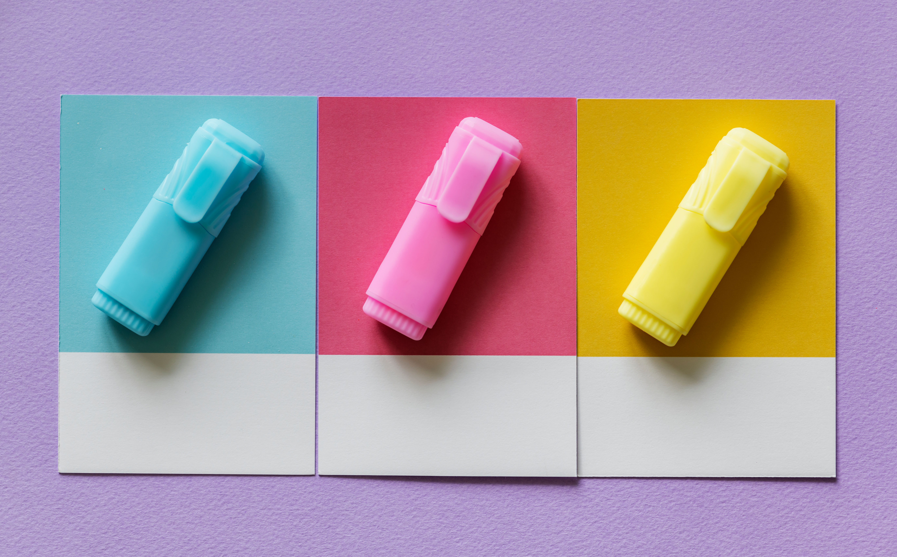
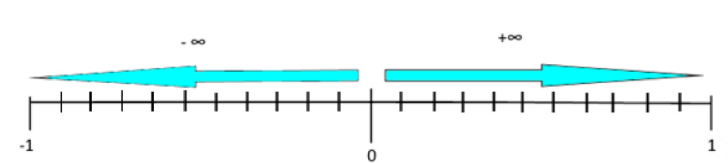
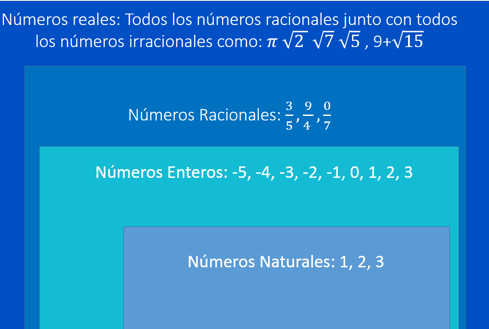

Considera dedicar tiempo de estudio a diario, realiza un cronograma de actividades. Programa horarios específicos a lo largo de la semana para tu tiempo de estudio y dedica al menos 3 horas ininterrumpidas a éste.
Tu Prepa en un Examen
Hábitos de Estudio
Descubre tu potencial como estudiante.
¿Cuáles son tus hábitos de estudio? ¿Son realmente “buenos”?Introducción
↓Antes de comenzar el curso, es importante tomes algunas consideraciones para mejorar tu potencial como estudiante, para tal efecto, te proporcionamos recursos para que implementes estrategias de aprendizaje, acordes a tus necesidades, adoptando así “buenos hábitos de estudio”, incorporando las técnicas adecuadas, considerando la asignatura a estudiar.
Empecemos con los hábitos que tienes para el estudio, pero ¿qué son? Muy sencillo, los hábitos de estudio son las prácticas y costumbres que generalmente empleamos a la hora de estudiar, estos hábitos pueden ser de gran utilidad, o bien, pueden detener nuestro proceso de aprendizaje, ya que, comúnmente están arraigados desde de la infancia, o pueden no existir.
↓Bienvenido a tu entorno de aprendizaje. De manera muy intuitiva podrás navegar por todo el curso. Aquí ↓ te decimos cómo.
| Tecla | Funcionalidad |
|---|---|
| esc | Muestra la visión general del curso. |
| ↑ | Regresar un paso. |
| ↓ | Avanzar un paso. |
| ← | Sección anterior. |
| → | Siguiente sección. |
Los hábitos de estudio aplican a todas las situaciones de estudio, sin importar la materia de la que se quiera aprender, así que, no los tomes a la ligera.
Para formar un hábito se requiere de constancia y esfuerzo, que más adelante se verá reflejado en los resultados de estudio.
A continuación, te mostraremos algunos hábitos a tomar en cuenta para mejorar tu aprendizaje.
Siguiente tema: Hábitos de Estudio
Hábitos
1. Hábitos que consideran la situación personal.
Pasa el ratón por las palabras para ver más-
Estado físico y de ánimo
Antes de comenzar, analiza tu situación personal. Si tienes mucho sueño o hambre, no podrás concentrarte en los contenidos; lo mismo sucede cuando tenemos altos niveles de estrés y preocupación. En esos casos, lo más conveniente es satisfacer en la medida de lo posible nuestras necesidades antes de comenzar la sesión de estudio.
-
Actitud
Ten una actitud positiva frente al estudio, no lo veas como algo aburrido o difícil, visualiza tu meta y ten presente como te ayudan las acciones diarias a conseguirla. No te rindas ante los errores y se constante.
-
¿Qué sabes y opinas sobre el tema de estudio?
Analiza antes de empezar: ¿Qué sé sobre el tema? ¿Qué ignoro? ¿Qué puedo hacer para obtener la información? Elimina cualquier prejuicio sobre la asignatura a estudiar, toma una actitud positiva y dale una oportunidad a esa materia que te cuesta tanto.
-
No te satures de información.
Evita abarcar más de 2 temas por sesión de estudio si te saturas de información, la retención disminuye y puedes llegar a confundir las temáticas.
Continúa hacia abajo.
2. Hábitos que refieren al lugar de estudio.
Pasa el ratón por las palabras para ver más-
Tu lugar de estudio
Para elegir un lugar adecuado de estudio debes considerar que cuente con buena iluminación, a una temperatura agradable espacio suficiente, sobre todo, debes sentirte cómodo en el lugar, estos aspectos son importantes porque de ahora en adelante pasarás varias horas en él.
-
Distractores
Ten una actitud positiva frente al estudio, no lo veas como algo aburrido o difícil, visualiza tu meta y ten presente como te ayudan las acciones diarias a conseguirla. No te rindas ante los errores y se constante.
-
Preparación
Antes de comenzar, verifica que tienes a la mano todo lo que necesitas para tu sesión de estudio; computadora, papelería básica, libros, diccionarios, incluso puedes incluir algún bocadillo y algo de beber, mientras menos tengas que pararte de tu lugar de estudio, mejor.
Continúa hacia abajo.
3. Tiempo de estudio
Al momento de estudiar, considera:
Planifica que tema estudiarás cada día, establece metas semanales y mensuales.
Entre realizar las lecturas, hacer ejercicios, repasar contenidos y revisar materiales de apoyo, así será más fácil apropiarte de los contenidos.
Intenta no estudiar demasiado de una sola vez y toma al menos 2 descansos de 10 o 15 min. Si estudias demasiado, te cansarás y tu estudio no será efectivo. Distribuye el trabajo que tienes que hacer en periodos cortos. Si tomas descansos breves, podrá restaurar tu energía mental.
Tema Anterior: Introducción
Siguiente tema: Técnicas de Estudio
Técnicas de estudio
Las técnicas de estudio son una serie de métodos, actividades y pasos sistematizados que facilitan el aprendizaje, ayudándote a optimizar el tiempo de estudio, la comprensión de los contenidos y a mejorar tu rendimiento académico en general.
Existen diferentes técnicas de estudio. A continuación, te enumeraremos algunas de ellas, las cuales te recomendamos, tomes en cuenta a lo largo de todo el curso.
Para desarrollar estas técnicas tendrás que utilizar tus habilidades como; la clasificación, descripción, relación y comparación. También pondrás a funcionar todos tus canales receptores de información (auditivo, visual, verbal) entre más utilices estas técnicas, más probabilidad hay de llegar a la meta de aprendizaje.
Técnicas de Lectura
La escritura y por ende la lectura, desde el comienzo de la humanidad, han tenido el objetivo de trasmitir información y conocimiento, de manera formal en la educación.
La lectura requiere de atención, concentración y reflexión. Para realizar una buena lectura y comprensión de texto debes tomar en cuenta lo siguiente:
Técnicas de Lectura
| Técnica | Descripción |
|---|---|
| Lectura rápida | Leer detenidamente los títulos y subtítulos te ayudará a tener una idea global del tema, identificar su estructura y temas en los que está dividido. |
Continuación...
| Técnica | Descripción |
|---|---|
Delimita tu lectura |
Es importante que, de preferencia, leas temas completos en un mismo día y no realices lectura de un tema en dos días diferentes. Observa detenidamente los ejemplos y pies de página que se indiquen. |
Continuación...
| Técnica | Descripción |
|---|---|
| Busca sinónimos | Te ayudará buscar sinónimos y antónimos para las palabras que encuentres más difíciles. |
Continuación...
| Técnica | Descripción |
|---|---|
Segunda lectura |
Te ayudará a comprender y reafirmar los contenidos, también tendrás la oportunidad de identificar conceptos nuevos. |
Continuación...
| Técnica | Descripción |
|---|---|
Glosario |
Busca y elabora definiciones de las palabras que no conozcas. Al realizar el glosario podrás conocer el lenguaje propio de la materia o tema que estudias además aumentarás tu vocabulario. |
Continuación...
| Técnica | Descripción |
|---|---|
| Destaca ideas importantes | Realiza una lectura e identifica los conceptos o ideas que son elementos claves en el tema, subraya, remarca o resalta palabras, puedes usar distintos colores para diferenciar la importancia. |
Continuación...
| Técnica | Descripción |
|---|---|
| Leer o repetir en voz alta | La lectura en voz alta puede eliminar la falta de concentración, al tiempo que, al escuchar, aumenta la comprensión a la hora de estudio. También puedes apoyarte haciendo grabaciones, las cuales puedes escuchar en otro momento en el que no tengas disponible las lecturas, esta técnica integrará otro canal de aprendizaje y aumenta tu memoria auditiva. |
Técnicas de Resumen
Para realizar un buen resumen tendrás que evitar copiar frases completas del texto o hacer citas textuales, recuerda que el resumir no es sinónimo de copiar, es captar lo importante de un texto.
Apuntes y Resúmenes
Después de realizar la lectura e identificar las ideas importantes, puedes concentrar la información en un resumen o apunte, estos, al ser textos expresados con tus propias palabras, te ayudarán a comprender, ordenando tu pensamiento, y recordar con mayor facilidad.
Fichas de Estudio
Las fichas de estudio son elementos básicos que ayudan al aprendizaje, a la retención de información y concepto. Se pueden realizar 1 o 2 fichas por tema, en ellas se concentran los datos más relevantes. Tienen la ventaja de ser de fácil acceso, así que las podrás utilizar para hacer repasos en todo lugar.
Técnicas de Síntesis de Información
Estas técnicas tienen por objetivo asimilar la información por medios gráficos o bien, directos, para ello, se pueden ocupar preguntas, imágenes, líneas conectoras, colores, palabras clave, etc.
Cuestionarios
Realizar cuestionarios ayuda a identificar lo más importante de un tema. Para ello, piensa en preguntas que te ayudarán a conseguir la información que necesitas, se pueden crear cuestionarios con diferentes tipos de preguntas abiertas o cerradas. Evita hacer cuestionarios muy extensos no más de 10 preguntas por tema, también considera el orden de tus preguntas orientándolas de lo general a lo particular.
Resolución de Problemas
Realizar ejercicios y problemas a la par que estudies la teoría, te ayudará a comprender los conceptos teóricos, los ejercicios favorecen que asimiles los conocimientos de manera práctica al “saber hacer”. Esta técnica es útil en asignaturas como Matemáticas, Física, y las ciencias experimentales con los casos prácticos.
Mapas mentales, conceptuales y Diagramas
Son un apoyo para aprender mediante la visualización, transfiriendo los pensamientos hacia una imagen en papel, de tal forma que plasmamos lo que pensamos de una forma gráfica. Muchas personas cuentan con una buena memoria visual, y memorizan mejor los conceptos cuando están asociados a imágenes o dibujos. Utilizar estos recursos además ayuda a sincronizar los dos hemisferios cerebrales, propiciando la integración de la información.
Otras Técnicas
Como bien has podido observar, las técnicas son variadas y dependen de tus gustos y habilidades para que así las puedas utilizar, sin embargo, existen otras acciones que bien, pueden resultarte útiles, ya que mezclan las habilidades en estrategias anteriormente mencionadas, o son un tanto diferentes.
Cuadros Comparativos
El cuadro comparativo es una técnica que permite organizar la información, identificando las semejanzas y diferencias de dos cosas, conceptos o eventos, permite Identificar los elementos que se desea comparar, resaltando las características de cada objeto o evento.
Nemotecnias
Especialmente útil cuando se trata de memorizar. Las nemotecnias se crean cuando se asocian, conceptos, letras o palabras, que son más familiares para nosotros con los contenidos académicos, permitiéndole a la mente producir una idea relativamente desconocida mediante la asociación y la memoria.
Hay muchas maneras de realiza una nemotécnia por ejemplo CHON es un acrónimo nemotécnico para los cuatro elementos más comunes en los organismos vivos: carbono (cuyo símbolo químico es C), hidrógeno (H), oxígeno (O) y nitrógeno (N).
Exámenes Prueba
Es una manera de repasar y evaluar en que contenidos tenemos más dificultades, al reconocer nuestras fortalezas y debilidades, podemos centrar los esfuerzos donde sea necesario.
Esta técnica de estudio, previa al examen, te prepara para practicar la resolución del mismo, en un tiempo límite, simulando la prueba real, una vez en la situación real, estarás más familiarizado con las circunstancias.
Tema Anterior: Hábitos
Siguiente tema: Estrategias de Aprendizaje
Estrategias de Aprendizaje
Aplicar estrategias, aunque no lo creas es parte de nuestra vida diaria, todos los seres humanos utilizamos estrategias para enfrentar las diferentes situaciones de la vida diaria de una mejor manera, sin embargo, no siempre somos conscientes del uso que hacemos de ellas ni tenemos un panorama claro de cómo y dónde utilizarlas. Al aplicar una estrategia necesitas analizar las circunstancias y condiciones actuales y elegir la opción, así como las herramientas más adecuadas para lograr el objetivo.
En el ámbito académico, la implementación de estas estrategias te permite ir desarrollando habilidades de aprendizaje que te facilitan el acceso a los diferentes materiales de estudio con los que te enfrentarás, identificando cuáles son las técnicas, la organización del tiempo y acciones más adecuadas a aplicar para resolver bien la tarea del estudio (esquemas, subrayados, repetición de la información, reglas nemotécnicas, etc.)
Al aplicar estrategias de aprendizaje, básicamente estás aprendiendo a aprender, lo que implica tener conciencia de este proceso, pero, sobre todo, de cómo lo estás llevando a cabo.
Para identificar qué estrategia es la más adecuada deberás tener buenos hábitos de estudio, para ello, te recomendamos tomar en cuenta los siguientes puntos:
Una vez elegido el tema, autoevalúa el conocimiento que tienes respecto y cuál es tu postura, tus limitantes y motivaciones.
Cuando tengas identificado cuál es el contenido y propósito del tema, la estrategia de aprendizaje a utilizar puede variar en función de lo que se tiene que aprender (datos históricos, conceptos, formulas etc.), así como la cantidad de información que debe ser aprendida.
¿Cuánto tiempo dispones para dedicar a la sesión de estudio? ¿Qué vas a necesitar para estudiar? Son algunas de las preguntas que debes resolver para lograr identificar la mejor estrategia.
Evalúa las diferentes estretegias de aprendizaje que aprendiste en este curso. Luego, identifica la estrategia de aprendizaje más adecuada, para elegir el lugar de estudio, el tiempo que dedicarás, qué técnica de estudio de entre tu repertorio te puede ayudar a comprender la temática y trazar una buena estrategia.
¿Qué vas a hacer y cómo lo llevarás a cabo? Es necesario que dispongas de una serie de recursos entre los que escoger.
Realiza alguna tarea o actividad encomendada, aplicando la estrategia planeada.
¿Comprendiste con facilidad?, esto resulta de gran importancia, ya que te brinda el conocimiento acerca de en qué situaciones puedes volver a utilizar esa estrategia y de qué forma debe utilizarse.
Como se dijo anteriormente, éstas son solo algunas recomendaciones, ya que tú puedes encontrar la que más te acomode, puesto que éstas dependen de tu habilidad en el manejo de las temáticas, el tipo de pensamiento con el que te manejes, así como tu Estilo de Aprendizaje.
Tema Anterior: Técnicas de Estudio
Siguiente tema: Competencias
Competencias
El siguiente paso, para que puedas introducirte en el mundo del aprendizaje, es conocer las habilidades de pensamiento que se espera que generes a lo largo del presente curso, esto, basado en el documento titulado “Las competencias genéricas en el estudiante del Bachillerato General”, realizado por la Secretaria de Educación Pública (SEP), en el año 2013, y al acuerdo 444, publicado el 21 de octubre del año 2008 en el Diario Oficial de la Federación y son las siguientes:
|
Tema Anterior: Estrategias de Aprendizaje
Siguiente módulo: Matemáticas I
Matemáticas I
Las matemáticas son fundamentales para el ser humano.
Aritmética, Álgebra, Geometría y ProbabilidadAntes de iniciar formalmente, es importante que conozcas las habilidades de pensamiento que debes desarrollar a lo largo del presente curso. Mismas que, según la Secretaría de Educación Pública, son esenciales para un alumno egresado del Bachillerato.
Es importante que tengas en cuenta el desarrollo de cada una de estas habilidades ya que, con base en ellas, podrás ver el mundo con otros ojos al entender los procesos matemáticos que pueden influir en la toma de decisiones de un evento, entendiendo así las características más importantes de éste, dando una predicción, si existiera la variación de algunas de las características que lo constituyen. Por ejemplo, la distribución del salario que percibes; debes organizar muy bien las necesidades que cubrirás con esa percepción económica, anticipándote a situaciones adversas que pueden representar un gasto extra, que en su momento no hayas contemplado.
Ahora que conoces las habilidades que debes desarrollar, es importante que tomes en cuenta las siguientes recomendaciones.
Recomendaciones
Antes de empezar a estudiar, es importante que identifiques cuáles son los temas que más se te dificultan.
Por lo menos con 15 días de anticipación para el examen. Repasa los apuntes y ejercicios.
Es decir, a mayor práctica, mayor aprendizaje. Esto es esencial para aprender a usar fórmulas y métodos.
Todos los temas se encuentran relacionados. Si te atrasas, te será difícil que retomes el ritmo. Estudiar en el último momento no te ayudará. Para evitar este problema, es preferible dedicar unas cuantas horas todos los días a la materia.
De esta forma aumentas tus posibilidades de comprender los temas, pues al contar con dos explicaciones de un mismo tema puedes complementar las ideas de una y otra para construir la explicación que tenga mejor sentido para ti.
Hay demasiadas fórmulas y métodos. Intenta dominar los conceptos claves. Esto reducirá la cantidad de información que necesitarás recordar. Recuerda que los temas están relacionados, si no comprendes un concepto, revisa el concepto anterior, así el nuevo concepto se relacionará con lo que ya has aprendido.
Siempre es conveniente resolver aquellos problemas que nos resulten más sencillos. En los libros aparecen, por lo regular, ejemplos explicados en detalle, aprovéchalos para dar inicio a la serie de ejercicios.
Recomendaciones
Conviene que sepas que, a los 20 minutos de haber aprendido algo nuevo, ya olvidamos el 42 %, y a la primera hora, el 65 %, por tal motivo, 15 minutos diarios de repaso antes de estudiar un nuevo tema, ayuda a incrementar la agilidad mental.
Realizar una lectura cuidadosa y a conciencia del tema que pretendes estudiar, esto te ayudará a mejorar tu comprensión y aprendizaje del mismo. Recuerda hacer esto con la teoría, los ejemplos y los ejercicios que encontrarás a lo largo del curso.
Busca un lugar tranquilo, libre de ruidos y distracciones, donde te encuentres cómodo, con todo el material que necesites cerca de ti (cuaderno, libros, lápices, etc.). Recuerda que, contar con un espacio adecuado de estudio, te permitirá concentrarte y mejorar tu aprendizaje. Si planificas el estudio con antelación, luego te alegrarás de haberlo hecho.
Un aspecto importante del aprendizaje, es autoconocerse. Si sabes cuáles son las formas en que comprendes y aprendes un tema, podrás dominarlo rápidamente.
Establece estrategias para resolver ejercicios, comprender conceptos y teorías, abordar problemas, etc. Éstas pueden ser; desde elaborar fichas de trabajo con los conceptos importantes, buscar tutoriales y ejemplos, hasta solicitar asesorías de algún profesor.
Todo aprendizaje se compone de procesos sencillos y complejos, a lo largo de este curso podrás darte cuenta de esto.
Es importante que mantengas una actitud positiva y buena disposición durante tus sesiones de estudio, de esta manera tendrás mejor recepción a los nuevos conocimientos. No desesperes si algún tema parece complejo, mejor busca estrategias para comprenderlo y seguir avanzando.
Dedica a este curso entre 21 y 35 horas a la semana para garantizar el aprendizaje.
RECUERDA QUE LOS RETOS SON POSIBLES DE SUPERAR CON ESFUERZO Y PERSEVERANCIA, ASÍ QUE NO TE DETENGAS HASTA ALCANZAR TU OBJETIVO.
¡COMENCEMOS!

Definición de Aritmética
La Aritmética es la rama de las matemáticas que estudia las propiedades elementales de ciertas operaciones sobre los números. Considerada como la más vieja y simple de todas las ramas de las matemáticas, es usada a diario por todo el mundo, tanto en las actividades más elementales (calcular distancias, administrar nuestro tiempo, realizar compras, cocinar, etc.), como en las ciencias más sofisticadas y complejas (física, química, biología, medicina, etc.).
Procedimientos Aritméticos
La primera “operación” con números no es sumar, es contar. Este es el primer acercamiento para desarrollar un pensamiento lógico, ordenado y sistematizado, necesario para incluir el uso de la aritmética en nuestras actividades.
Para hablar de aritmética no es necesario definir un sistema privilegiado de numeración, sin embargo, debe advertirse que algunos sistemas son más convenientes que otros. Tal es el caso de la numeración arábiga, la cual fue desarrollada por un matemático indio cuyo nombre se desconoce. Posteriormente, fue adoptada por los árabes, quienes la compartieron con el resto del mundo otorgándole la denominación con la que la identificamos hasta nuestros días. Una de las razones de que la numeración arábiga sea adecuada para los procesos aritméticos, es su sistema de posiciones decimal, que favorece la implementación de algoritmos con los cuales se pudieron efectuar operaciones básicas.
Puede decirse que la idea de número aparece desde que el hombre tiene necesidad de contar, es decir, relacionar los objetos que le pertenecen con este concepto en su mente. Por ello, utiliza símbolos diversos para representarlos y así facilitar su manejo y comprensión. La herramienta básica de estas dos ramas de las matemáticas son los números, tanto en su concepto, como en su notación o simbolización.
Primeros Tiempos
Clasificación Numérica
Todos estamos familiarizados con el uso de los números naturales, enteros, racionales, irracionales y los reales; pero seguramente no los identificamos por estos nombres, ni los conocemos en su conjunto correspondiente.
Surgieron para cubrir la necesidad del humano de resolver problemas aritméticos, es decir, que se realizan con números y suponen un problema algebraico. Es tan simple como saber la cantidad de víveres necesarios para alimentar a una familia o tan complejo como calcular la velocidad de la luz. La pregunta es, ¿cómo se clasifican los números?
Números Reales
En unos primeros inicios, es como se desarrolló todo el pensamiento basado en los números. Dentro de esta rama de las matemáticas, se ha categorizado a los números de la siguiente manera: naturales, enteros, racionales, irracionales y hasta llegar a los números reales sobre los que descansan buena parte de las matemáticas tradicionales o elementales.
Los números reales, son aquellos números con una expresión decimal. Es el conjunto más importante de números para el desarrollo de la Aritmética, el Álgebra, la Geometría Plana, Analítica y el Cálculo Diferencial e Integral. Se definen como la unión de los números Racionales e Irracionales y cubren por completo a la recta numérica. Se dibujan como una la recta sin “huecos” (ver Figura 2).
Figura 2.- Representación gráfica de los números Reales.
Números Naturales
Los números naturales surgen de manera intuitiva desde el principio de la historia con la noción de cantidad. Es decir, son los números que se utilizan para contar y es importante recalcar que el cero no forma parte de ellos; al no existir nada, no hay nada que contar. Está compuesta solamente por números positivos (+), excluyendo a los números negativos (-). Esta clasificación se representa de la siguiente manera: $$ \Bbb{N} = (1,2,3,4,5...) $$
Números Enteros
Los números enteros se definen como los compuestos de los números naturales, como el cero y los números naturales que cuentan con un símbolo negativo. Su forma de representación es: $$ \mathbb{Z} = (..., -4,-3,-2,-1,0,1,2,3,4, ...) $$
Números Racionales
Son todos aquellos que se expresan con el cociente de dos números enteros, nos referimos a las fracciones, exponentes y radicales. Para que un cociente se clasifique como un número racional, su resultado debe de ser un número entero. Es decir, un decimal infinito (un número que no se puede expresar en una fracción) no clasifica como un número racional, por ejemplo:
$ \frac{4}{2} = 2,$ $\frac{3}{2} = 1.5$, $ 2^{4},$ $\sqrt{4}$
Otra condición es que, en una fracción, el numerador (número que se divide) no puede ser dividido entre 0 y que 0 al ser el numerador, sin importar cuál sea de denominador (número que divide) siempre dará como resultado 0. Los números racionales se representan con el símbolo $\mathbb{Q}$.
Números Complejos
Se refieren a los números imaginarios. Éstos son la simbología que ayuda a responder situaciones, como una raíz cuadrada de un número negativo, la cual no es posible, ya que la raíz cuadrada es el proceso opuesto a elevar al cuadrado, quiere decir que siempre se conseguirá un número natural.
$\sqrt{-1} = x^{2}$ x representa a un número imaginario.
Los números complejos se representan con el símbolo $\mathbb{C}$.
En la figura 3, podrás apreciar de manera conjunta la conformación de los números y sus distintas categorizaciones y representaciones.
Figura 3.- Representación de la clasificación numérica.
Operaciones Básicas
Dentro de estas categorizaciones, se cuenta con las siguientes operaciones básicas: suma, resta, multiplación y división. Estos conceptos los abordaremos uno a uno para que tengas una mayor comprensión del tema.

Suma
La adición o suma es una operación de números naturales que permite solucionar situaciones en las que se realizan tareas como agregar o agrupar. En esta operación, los datos para agrupar se denominan sumandos y el resultado se nombra suma.

Suma con Enteros
Ejemplos:
$307 + 206 = 513$
$500+201+1347=2048$
$1498+3421+12398=17317$
Ejercicios
Matemáticas II
Las matemáticas aplicadas a la vida humana.
Estadística, Gráficas y NaturalezaFísica
Estudia los componentes fundamentales del Universo.
Energía, Materia y Tiempo-EspacioQuímica
Estudia la composición, estructura y propiedades de la materia.
Materia, Estructura Atómica y Enlaces.Biología
Estudia la estructura de los seres vivos y de sus procesos vitales.
Biomoléculas, Biotecnología y Biodiversidad.Ecología
Estudia las relaciones de los seres vivos entre sí y con el medio en el que viven.
Población, Ecosistemas y Recursos Naturales.Filosofía
Responde las grandes interrogantes que cautivan al hombre.
Nociones Generales, Sociedad y Filosofía Moderna.Civismo
Comportamiento social que nos permite convivir en colectividad.
Sociedad, Normas y Gobierno.Historia de México
Conoce las raíces de México.
México Prehispánico, Conquista y s. XX.Historia Universal
Recorre los momentos mas trascendentales de la Historia Universal.
Independencias, Revoluciones, Guerras y Globalización.Geografía Física
Estudia y describe la superficie de la Tierra en su aspecto físico, actual y natural.
Sistema Solar, Evolución y Composición.Geografía Universal
Estudia los componentes fundamentales del Universo.
Población, Geografía Política y Globalización.Habilidades Lectoras y de Redacción
Estudia los componentes fundamentales del Universo.
, Materia y Tiempo-EspacioFuentes de Consulta
Estudia los componentes fundamentales del Universo.
Energía, Materia y Tiempo-Espacio